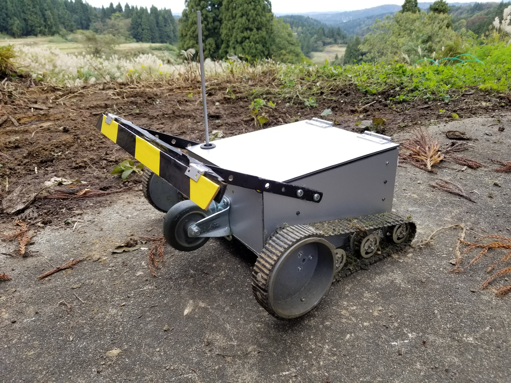
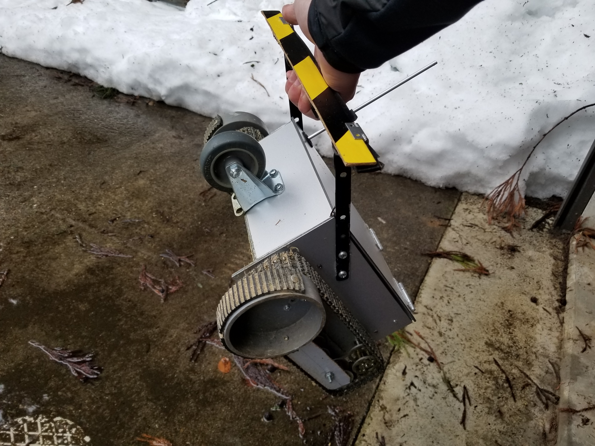
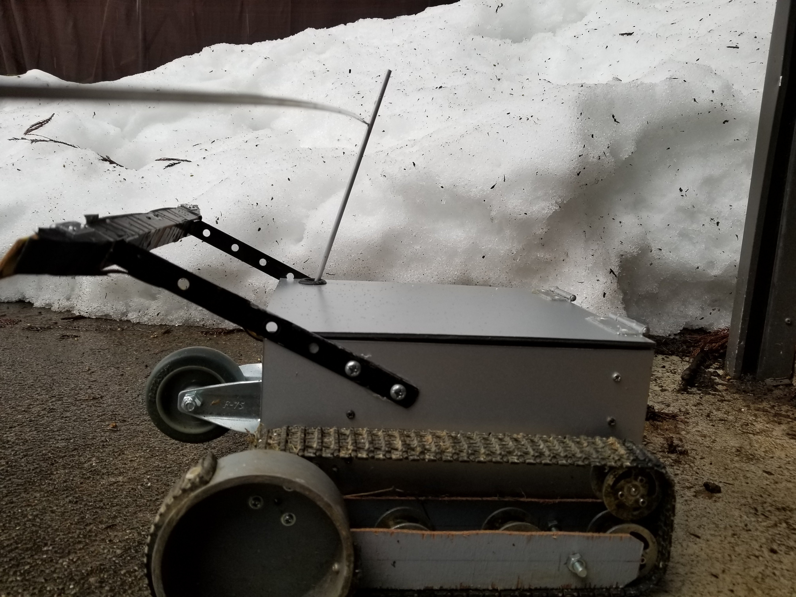

Roktrack Mowerは軽量で荒れ地でも使える中山間地向けのロボット草刈り機。誰でも気軽かつ安全に草刈りができます。
段差乗り越え性能
クローラーと偏心タイヤによる5cmの段差乗り越え性能を有し、砂利、枝、石などの混在環境でも運用可能です。

登坂性能
前方荷重による３５度の登坂性能を有し、仮払機では急に感じる斜面での作業を自動化します。
軽量
５kg弱の軽量設計で、片手で持ち上げられます。遠隔地への運搬も楽に行えます。

作業境界設定
地上高25cmにロープを張るだけで境界設定ができる。ロープに接触するとランダムに方向転換します。 電源不要で遠隔地にも設置可能で、安価に複数箇所に敷設できます。

草刈能力
一度の充電で100㎡程度の草刈りが可能で、範囲が広い場合は複数台で並列作業で補うことができます。
修理容易性
ほとんどの部品で市販品を利用しており、ホームセンターとネット通販で個人購入可能です。 刈刃は事務用カッターの刃を利用しており、入手性が高いです。